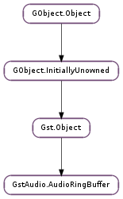

| static | debug_spec_buff(spec) |
| static | debug_spec_caps(spec) |
| static | parse_caps(spec, caps) |
| acquire(spec) | |
| activate(active) | |
| advance(advance) | |
| clear(segment) | |
| clear_all() | |
| close_device() | |
| commit(sample, data, in_samples, out_samples, accum) | |
| convert(src_fmt, src_val, dest_fmt, dest_val) | |
| delay() | |
| device_is_open() | |
| is_acquired() | |
| is_active() | |
| is_flushing() | |
| may_start(allowed) | |
| open_device() | |
| pause() | |
| prepare_read(segment, readptr, len) | |
| read(sample, data, len, timestamp) | |
| release() | |
| samples_done() | |
| set_callback(cb, *user_data) | |
| set_channel_positions(position) | |
| set_flushing(flushing) | |
| set_sample(sample) | |
| set_timestamp(readseg, timestamp) | |
| start() | |
| stop() |
None
None
| Name | Type | Access |
|---|---|---|
| acquired | bool | r |
| active | bool | r |
| cond | GLib.Cond | r |
| empty_seg | int | r |
| flushing | bool | r |
| memory | int | r |
| need_reorder | bool | r |
| object | Gst.Object | r |
| open | bool | r |
| samples_per_seg | int | r |
| segbase | int | r |
| segdone | int | r |
| spec | GstAudio.AudioRingBufferSpec | r |
| state | int | r |
| waiting | int | r |
Bases: Gst.Object
This object is the base class for audio ringbuffers used by the base audio source and sink classes.
The ringbuffer abstracts a circular buffer of data. One reader and one writer can operate on the data from different threads in a lockfree manner. The base class is sufficiently flexible to be used as an abstraction for DMA based ringbuffers as well as a pure software implementations.
Last reviewed on 2006-02-02 (0.10.4)
| Parameters: | spec (GstAudio.AudioRingBufferSpec) – the spec to debug |
|---|
Print debug info about the buffer sized in spec to the debug log.
| Parameters: | spec (GstAudio.AudioRingBufferSpec) – the spec to debug |
|---|
Print debug info about the parsed caps in spec to the debug log.
| Parameters: |
|
|---|---|
| Returns: | True if the caps could be parsed. |
| Return type: |
Parse caps into spec.
| Parameters: | spec (GstAudio.AudioRingBufferSpec) – the specs of the buffer |
|---|---|
| Returns: | True if the device could be acquired, False on error. MT safe. |
| Return type: | bool |
Allocate the resources for the ringbuffer. This function fills in the data pointer of the ring buffer with a valid Gst.Buffer to which samples can be written.
| Parameters: | active (bool) – the new mode |
|---|---|
| Returns: | True if the device could be activated in the requested mode, False on error. |
| Return type: | bool |
Activate buf to start or stop pulling data.
MT safe.
| Parameters: | advance (int) – the number of segments written |
|---|
Subclasses should call this function to notify the fact that advance segments are now processed by the device.
MT safe.
| Parameters: | segment (int) – the segment to clear |
|---|
Clear the given segment of the buffer with silence samples. This function is used by subclasses.
MT safe.
Fill the ringbuffer with silence.
MT safe.
| Returns: | True if the device could be closed, False on error. MT safe. |
|---|---|
| Return type: | bool |
Close the audio device associated with the ring buffer. The ring buffer should already have been released via GstAudio.AudioRingBuffer.release ().
| Parameters: | |
|---|---|
| Returns: | The number of samples written to the ringbuffer or -1 on error. The number of samples written can be less than out_samples when buf was interrupted with a flush or stop. |
| Return type: |
Commit in_samples samples pointed to by data to the ringbuffer buf.
in_samples and out_samples define the rate conversion to perform on the samples in data. For negative rates, out_samples must be negative and in_samples positive.
When out_samples is positive, the first sample will be written at position sample in the ringbuffer. When out_samples is negative, the last sample will be written to sample in reverse order.
out_samples does not need to be a multiple of the segment size of the ringbuffer although it is recommended for optimal performance.
accum will hold a temporary accumulator used in rate conversion and should be set to 0 when this function is first called. In case the commit operation is interrupted, one can resume the processing by passing the previously returned accum value back to this function.
MT safe.
| Parameters: |
|
|---|---|
| Returns: | True if the conversion succeeded. |
| Return type: |
Convert src_val in src_fmt to the equivalent value in dest_fmt. The result will be put in dest_val.
| Returns: | The number of samples queued in the audio device. MT safe. |
|---|---|
| Return type: | int |
Get the number of samples queued in the audio device. This is usually less than the segment size but can be bigger when the implementation uses another internal buffer between the audio device.
For playback ringbuffers this is the amount of samples transfered from the ringbuffer to the device but still not played.
For capture ringbuffers this is the amount of samples in the device that are not yet transfered to the ringbuffer.
| Returns: | True if the device was open, False if it was closed. MT safe. |
|---|---|
| Return type: | bool |
Checks the status of the device associated with the ring buffer.
| Returns: | True if the ringbuffer is acquired, False on error. MT safe. |
|---|---|
| Return type: | bool |
Check if the ringbuffer is acquired and ready to use.
| Returns: | True if the device is active. |
|---|---|
| Return type: | bool |
Check if buf is activated.
MT safe.
| Returns: | True if the device is flushing. |
|---|---|
| Return type: | bool |
Check if buf is flushing.
MT safe.
| Parameters: | allowed (bool) – the new value |
|---|
Tell the ringbuffer that it is allowed to start playback when the ringbuffer is filled with samples.
MT safe.
| Returns: | True if the device could be opened, False on error. MT safe. |
|---|---|
| Return type: | bool |
Open the audio device associated with the ring buffer. Does not perform any setup on the device. You must open the device before acquiring the ring buffer.
| Returns: | True if the device could be paused, False on error. MT safe. |
|---|---|
| Return type: | bool |
Pause processing samples from the ringbuffer.
| Parameters: | |
|---|---|
| Returns: | False if the buffer is not started. MT safe. |
| Return type: |
Returns a pointer to memory where the data from segment segment can be found. This function is mostly used by subclasses.
| Parameters: | |
|---|---|
| Returns: | The number of samples read from the ringbuffer or -1 on error. MT safe. |
| Return type: |
Read len samples from the ringbuffer into the memory pointed to by data. The first sample should be read from position sample in the ringbuffer.
len should not be a multiple of the segment size of the ringbuffer although it is recommended.
timestamp will return the timestamp associated with the data returned.
| Returns: | True if the device could be released, False on error. MT safe. |
|---|---|
| Return type: | bool |
Free the resources of the ringbuffer.
| Returns: | The number of samples processed by the ringbuffer. MT safe. |
|---|---|
| Return type: | int |
Get the number of samples that were processed by the ringbuffer since it was last started. This does not include the number of samples not yet processed (see GstAudio.AudioRingBuffer.delay ()).
| Parameters: |
|
|---|
Sets the given callback function on the buffer. This function will be called every time a segment has been written to a device.
MT safe.
| Parameters: | position (GstAudio.AudioChannelPosition) – the device channel positions |
|---|
Tell the ringbuffer about the device’s channel positions. This must be called in when the ringbuffer is acquired.
| Parameters: | flushing (bool) – the new mode |
|---|
Set the ringbuffer to flushing mode or normal mode.
MT safe.
| Parameters: | sample (int) – the sample number to set |
|---|
Make sure that the next sample written to the device is accounted for as being the sample sample written to the device. This value will be used in reporting the current sample position of the ringbuffer.
This function will also clear the buffer with silence.
MT safe.